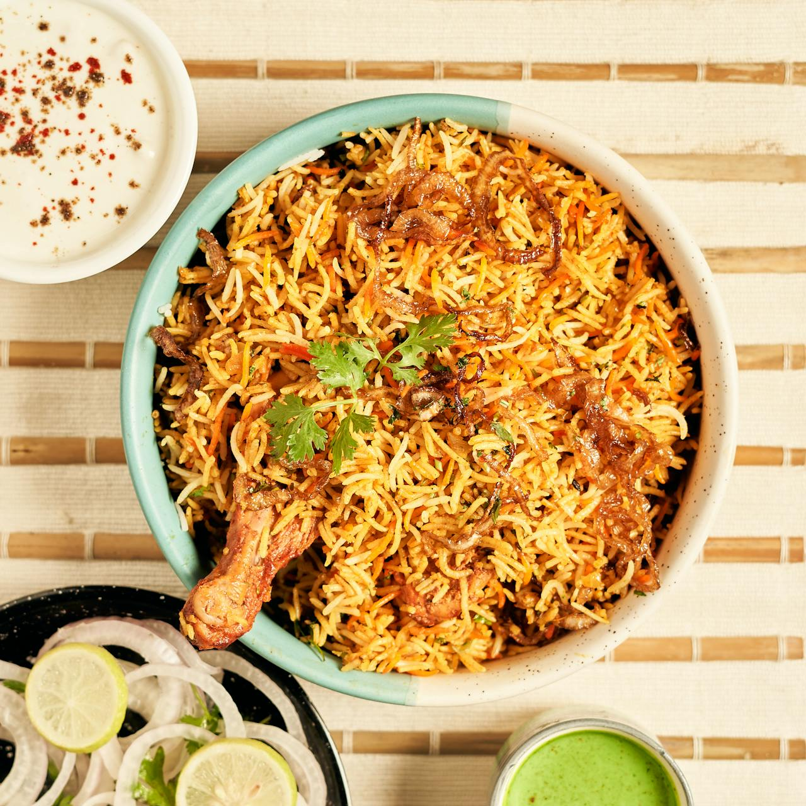

Samosa

Description
An aromatic mixed rice dish generally made with rice, spices, and meat cooked in layers. It has different variations
across regions of South Asia, each with its own flavors and unique characteristics.
This recipe is courtesy of Cook with Kushi
Ingredients
- 1 cup basmati rice
- 4 cups water
- 2 teaspoons salt
- 400g chicken thighs
- 1 lemon
- 2 onions, finely chopped
- 2 tomatoes
- 6 strands of coriander leaves
- 1/4 cup mint leaves
- 1.5 tablespoon oil
- Spices
Steps
- Wash and soak rice for 15 mins
- Add rice, water, and salt to a pot and cook until rice is 80% cooked
- Drain the rice and keep it aside
- In a bowl, add chicken thighs, turmeric and chili powder, salt and lemon juice. Mix and allow it to marinate for 15 mins
- In a pan, add oil, cinnamon sticks, cloves, cardomom, bay leaves, and cumin seeds, then sautee
- Add the marinated chicken and allow it to cook for 3 mins
- Add garlic, ginger, and green chilis and cook for 2 mins
- Add onion, tomato, coriander, mint, and tandoori masala; mix well
- Spread the masala over the base of the pan evenly before adding in rice
- Garnish with some more mint and coriander
- Sprinkle some tandoori masala powder and add 1/4 cup of water
- Cook on low flame until rice is cooked thoroughly
Home